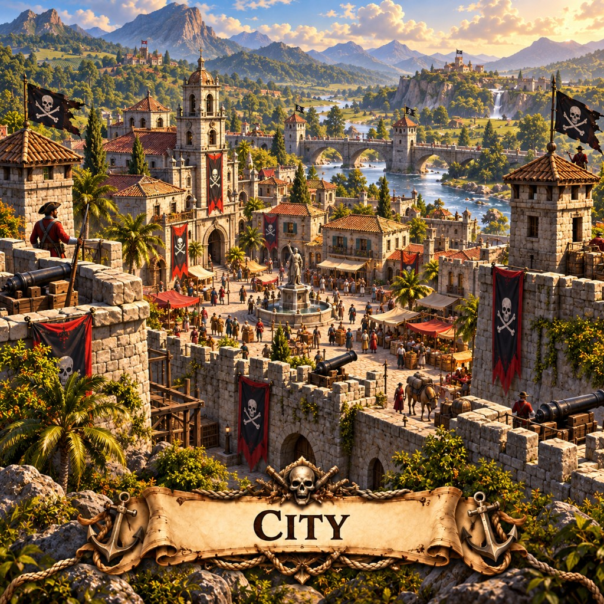

Cities in Marauder's Sea raise max population. Cost, upgrades, ship damage, and how they fit island warfare.

Every crew wants a square with a fountain and a flag that is not someone else's. Cities are where gold turns into people, and people turn into the next beach.
Increases max population. Costs scale with how many you already have (power-of-two, cap $1,000,000). Upgradable. Ships can damage them; they die at zero hit points. Fast to raise (about 2 seconds).
Back to the building list or pick a map like X Marks the Spot and play this mobile strategy game in the browser.